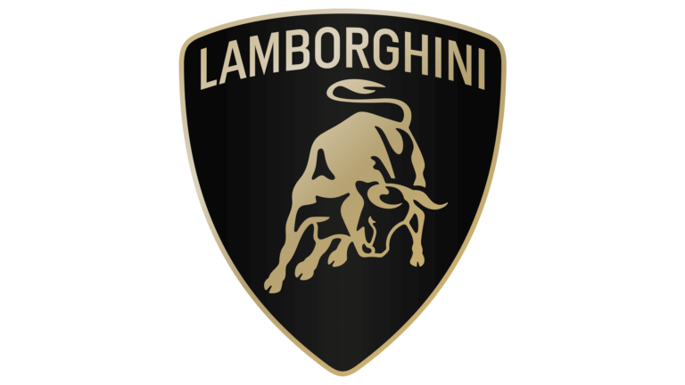
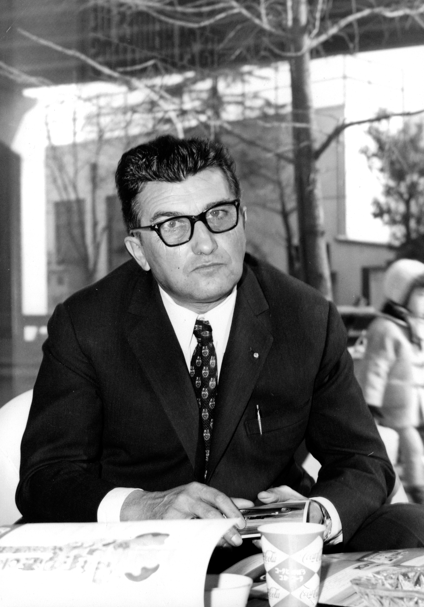
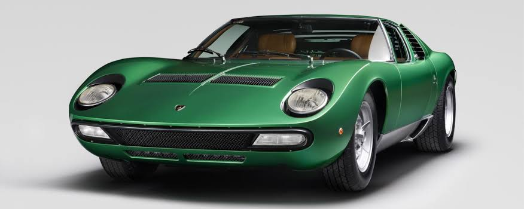
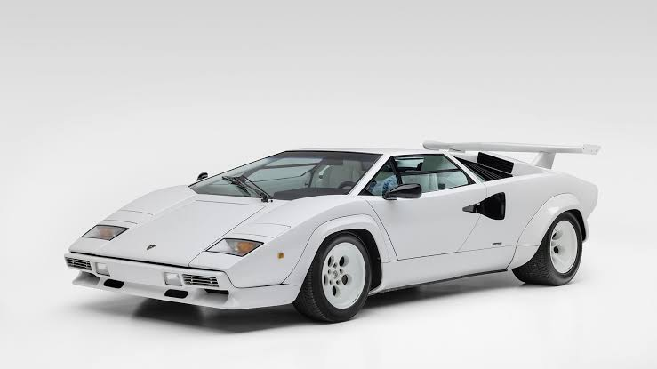
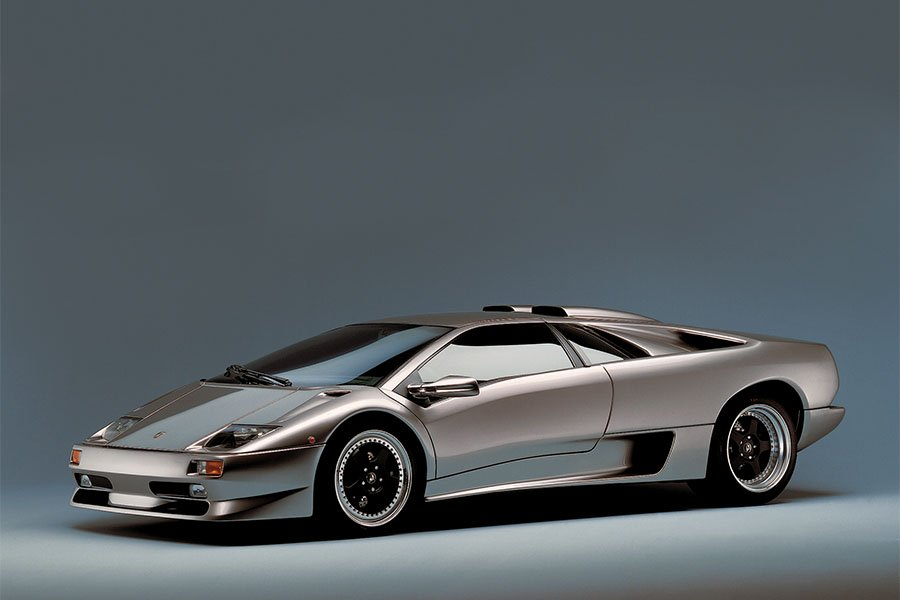
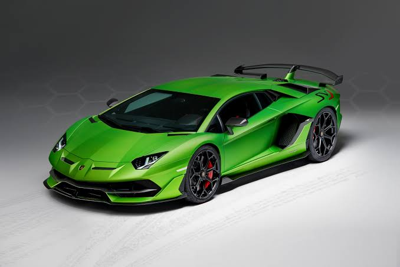
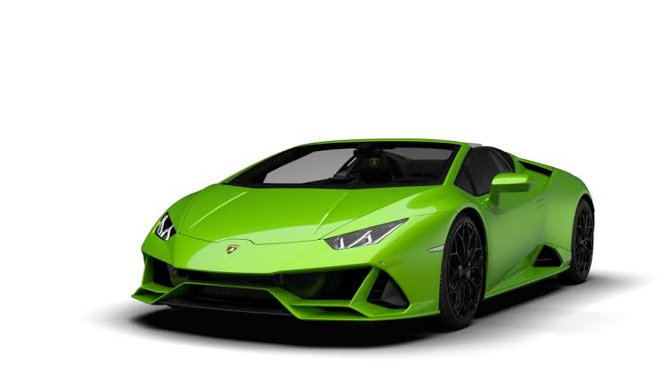

How Lamborghini Started
Lamborghini was founded in 1963 by Ferruccio Lamborghini. Initially, Ferruccio was a tractor manufacturer, but his passion for cars led him to start his own automobile company. He believed he could build a luxury sports car that was better than Ferrari, focusing on both style and performance.
The Visionary: Ferruccio Lamborghini
Ferruccio Lamborghini, born in Italy, was not only a successful industrialist but also an innovator. After a heated discussion with Enzo Ferrari about the quality of Ferrari cars, Ferruccio decided to create his own automobile brand. This determination gave birth to the iconic Lamborghini.
"Ferruccio believed luxury and power could be combined to create something extraordinary."
The Early Days
Lamborghini's first car, the 350 GT, was introduced in 1964 and received critical acclaim. Unlike competitors, Lamborghini focused on creating cars that combined cutting-edge engineering with elegant designs. By the 1970s, Lamborghini had established itself as a leader in the sports car industry.
The Miura, introduced in 1966, became an instant sensation. It was the first car to feature a mid-engine layout, setting the standard for modern supercars.
Iconic Models Over the Years
   Lamborghini has produced some of the most iconic supercars in history. Models like the Countach, Diablo, Murciélago, Aventador, and Huracán have redefined luxury and performance. Each model is a blend of breathtaking design and advanced engineering.
Top Models:
- Countach: The futuristic design that became a symbol of the 1980s.
- Diablo: Known for its raw power and sleek aesthetics.
- Aventador: A modern masterpiece with a V12 engine.
- Huracán: A perfect mix of performance and luxury.
Lamborghini Today
.jpeg.jpg)
Today, Lamborghini is a global leader in the luxury car market. It is owned by the Volkswagen Group through its Audi subsidiary. The company continues to innovate with models like the Lamborghini Urus, a luxury SUV that has broadened its audience.
Lamborghini also focuses on sustainability, introducing hybrid technology in models like the Sian. Despite changes in the industry, Lamborghini remains committed to delivering unmatched speed and luxury.